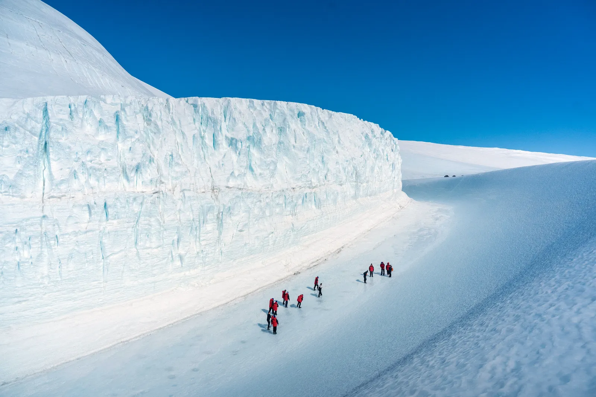
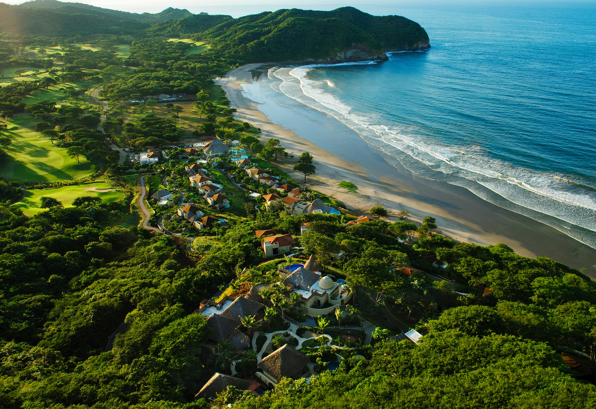
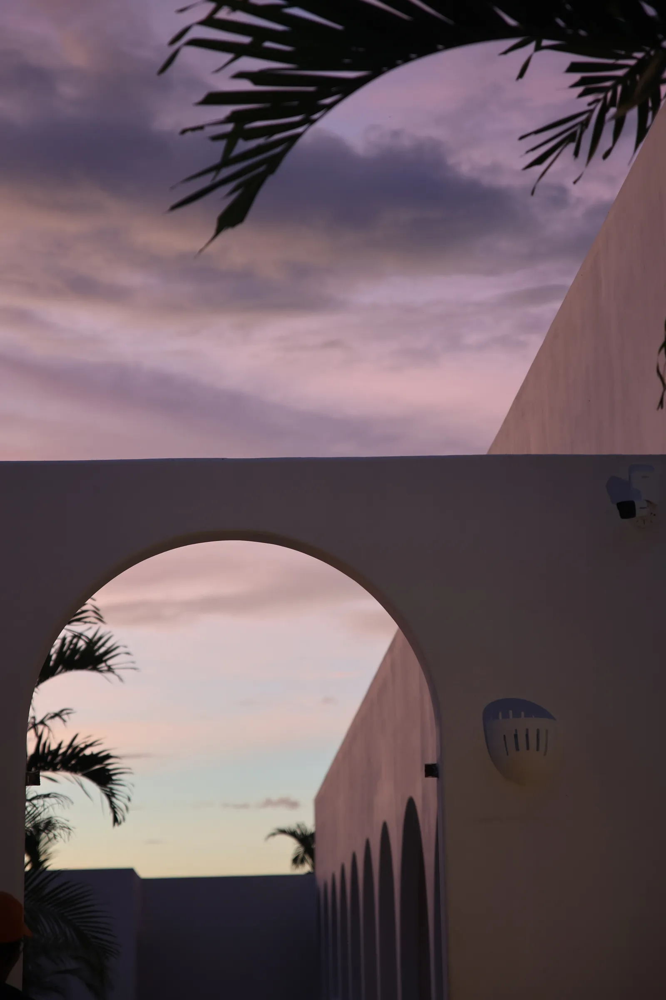

Best Places to go in 2025
Stargaze from moonscape deserts, or absorb high-design in a rising city
Determining the best places to go in 2025 was no easy task. After all, most of our readers suffer from the same affliction we do: an insatiable desire to go everywhere, see everything, and be dazzled by the world’s rich and varied contours. Treating a new year as a blank slate for fresh adventures is overwhelming then, no matter how tattered our passports.
Perhaps that’s why we get so excited about change – as a way of narrowing down the abundance of choices. The places that are evolving. The places that are just getting started. The destinations that are being reshaped by new openings: the standout restaurants, culture-defining museums, and boutique hotels swinging their doors open in the coming months. It is those places, imbued with a sense of a fresh start, that have a way of crawling up to the top of our must-visit lists.
In 2025 one of those places is Greenland, once a feather in only the most seasoned travellers’ caps. Its rugged ice-scape will be easier to reach now that the Nuuk airport has expanded, with flights increasing throughout 2025. Also calling to us is Ho Chi Minh City, which, at 50 years since the fall of Saigon this spring, has fully come into its own as a design and dining destination. And on Queensland’s Tropical Coast, the Great Barrier Reef, with aquamarine seas and a kaleidoscope of sea life, no longer stands alone in drawing travellers to this temperate coastline – a new hiking and biking trail and bold Indigenous art exhibits make a case for staying on dry land (or simply staying longer).
These are just some of the stories you’ll find below. There are 25 in total. Twenty-five places that, no questions asked, our editors would jump at the opportunity to visit next year. (In many cases, we will be visiting them ourselves; stay tuned.) Twenty-five places we want you to know about, before your TikTok feed – or your kid’s TikTok feed – is swimming in them. Twenty-five places that speak to our values as travellers in 2025, be it innovation in conservation, astounding creativity, or a profound sense of human connection. We hope you’ll see the names not only of spots you have been waiting to visit (and consider this your sign to make it happen) but also of places you’ve never heard of. Because just when you think you’ve seen it all, we promise to shine our spotlight on intriguing new corners of the world. These are the best places to go in 2025 – on all seven continents.
1. Ahr Valley, Germany .
Go for: fine wines, great nature, and a warm welcome back
In July 2021, large parts of the Ahr Valley in Rhineland-Palatinate were destroyed. The gently babbling Ahr turned into a raging river – with floods, flash floods, and tidal waves resulting in widespread tragedy. But now, visitors are welcome again, as demonstrated by the slogan “We AHR open” – even if the Ahr Valley is not yet fully rebuilt. The train that cut through the valley will run again at the end of 2025, connecting its villages with a 22-mile-long, picturesque red wine hiking trail. The trail leads through the most beautiful terraces and steep slopes of the wine-growing region and offers numerous places to stop for a Pinot Noir, which, together with Blanc de Noir, is the region’s speciality. Be sure to try it at the wineries of Jean Stodden, Meyer-Näkel, and the wine-growers cooperative, Mayschoss.


Numerous wine growers, restaurateurs, and hoteliers have not only taken the reconstruction of the region into their own hands but also its further development. They have seen opportunities, invested, worked tirelessly, and developed new, modern concepts. The Sustainable Tourism Concept 2025 is the joint result of all those who have already felt the effects of climate change. Most of these projects will only be initiated in 2025 – after which you can watch them develop – but some of the best examples are here already. Markus Bell, who runs the Bells Genusshof restaurant, serves local produce in a space that feels like a cool concept store. In Altenahr, Andreas Carnott has expanded his Hotel Ruland to include a spectacular wellness area with a view of the slate cliffs; he is also considered one of the best chefs in the region. At Restaurant Brogsitter, Benjamin Schöneich regained his Michelin star in the spring of 2024 after starting there in the fall of last year.
Around 80 per cent of establishments were open again in the Ahr Valley by the summer of 2024, and the number of hotels on offer is on the rise, too. New openings include the lovingly designed boutique hotel Burg Adenbach & Alter Weinbau in Ahrweiler, alongside reopenings like the grande dame of Ahr, the Steigenberger Hotel in Bad Neuenahr at the beginning of June 2024. Not only will its large indoor pool and spa reopen at the end of 2024, but concerts will take place in the event rooms again; and thermal baths will follow next year.
2. Alaska, US .
Go for: the 100th anniversary of a beloved cultural tradition; Native-led wildlife viewing
It'll be another 34 years before Alaska as a state turns 100 years old. But some of its best-known events and attractions are hitting that milestone in 2025, like the Serum Run, a sled dog relay that brought lifesaving diphtheria antitoxins from Nenana to Nome in 1925. The event has been celebrated annually with the Iditarod Trail Sled Dog Race, which enthrals visitors and locals who gather along its 1,000-mile course to watch top mushers and their dogs compete. To catch the start of the race, post up at the Wildbirch Hotel, Anchorage’s first new major lodging in 20 years. The boutique stay, with 252 design-forward guest rooms and partnerships with local artists, will open in early 2025 and offer unobstructed views of the Iditarod start line. Also turning 100 is the unrelentingly beautiful Glacier Bay National Park and Preserve (which became a national monument in 1925), filled with rugged mountains, wild coastline, and abundant wildlife. It is the ancestral land of the Huna Tlingit people, who, in recent years, have collaborated with the National Park Service to restore previously suppressed oral histories and cultural traditions. One endeavour was building the Xúnaa Shuká Hít tribal house, the first permanent clan house on these shores since a glacier destroyed villages more than 250 years ago.
The Huna people also own nearby Icy Strait Point, one of the most exciting cruise ship destinations in southeast Alaska. Come 2025, it will welcome new sailings, including Princess Cruises’ 22-day Ultimate Alaska Solstice voyage, which will depart from San Francisco in June. The itinerary takes advantage of the 19-plus hours of sunlight available during the summer solstice, giving you that much more time to take in views of Glacier Bay National Park, Hubbard Glacier, the College Fjord, and more. For an on-land adventure with a side of guided bear viewing, head to Native-owned Kodiak Brown Bear Center on verdant Kodiak Island, where small groups of visitors share space with the largest subspecies of brown bear in the world. In the summer of 2025, KBBC will open a new wellness centre built on a picturesque bluff and offer new, six-day fly-fishing programs on the Karluk River; by evening, guests can retreat to their wood cabins that have views of the lake – after a communal Banya-style steam bath that the Alutiiq people call maqiwik. Notably, Alaska Airlines has ramped up its scheduling in 2024 by adding a daily nonstop to New York alongside its existing service to San Diego, Nashville, and Portland, Oregon, making it easier than ever to get here.

3. Cuba .
Go for: the return of travel to an enduring favorite and its prismatic treasures
Cuba has long captivated visitors with its Afro-Cuban culture, UNESCO-protected cities, gelato-coloured classic cars – and its loquacious, quick-witted locals. Post-pandemic, travellers can enjoy all of this once more. Cuba’s new e-visas, launched in August 2024, pave the way, as does the return of several American tour companies that had paused travel to the island. Starting in January 2025, Abercrombie & Kent’s tours will take travellers first to Camagüey, Cuba’s third-largest city – and a UNESCO World Heritage Site filled with churches, figurative sculptures, and celebrated ballet performances at the City’s Teatro Principal – before travelling west to spellbinding Trinidad, with a beach stay in the sparkly new Meliá Trinidad Península. Then, travellers will go on to Cienfuegos, the city of columns, and Santa Clara, home to Che Guevara’s monumental mausoleum before landing in Havana. That same month, GeoEx tees up a range of immersive experiences in Trinidad, plus a live performance in Cienfuegos by the Chamber Orchestra, with meals at authentic Cuban paladares (private restaurants) and private salsa lessons. (Guests will drop their bags at tropical hideaway Mansión Alameda, which opened in 2023.) With Tauck, which returned to Havana in September 2024, there are opportunities to interact with fascinating locals: a baseball star, a tobacco farmer from the lush Viñales Valley, and the members of a vintage car club. ReRoot Travel’s brand-new program is similarly designed to take you off the beaten track and into the homes of artists, farmers, even Santeria priests. If you want to time your visit to Havana’s dazzling festival calendar, join Project Por Amor with Cuban-born Adolfo Nodal, on new multiday trips anchored to the International Jazz Festival (January) and the Havana Biennial art fair (November through February). A flurry of gorgeous boutique stays have opened in Havana in the last 18 months including La Distancia, in an elegantly revived mansion in the leafy neighbourhood of El Vedado, and Estancia Bohemia, a luxurious stay in a reimagined 18th-century palace. By the end of 2024, Havana’s third Kempinski property will open its doors in northern Old Havana: the 219-roomed Gran Hotel Metrópolis with a rooftop pool and panoramic views. Skip sleep in favour of a night out at Mayko’s Lounge Bar, opening in February 2025 in southern Old Havana. Owner Wilson Hernández is Havana’s best-known bartender, formerly of hip hideaway El del Frente, so you can expect heady cocktails, ’70s cult music, and all the vibes
4. Djerba, Tunisia
Go for: a multicultural North African take on Mediterranean island vibes; culinary revivals; street art steeped in history
Home to Africa’s oldest synagogue, more than 300 mosques, a Catholic church, and a thousand-year-old village bedecked in contemporary murals, Djerba is a delightfully unorthodox – and much-needed – reminder that humans thrown together in splendid isolation can get things right. This island of date palms and olive groves, which sits on the southern edge of the Mediterranean Sea and is said to be the real-life Land of the Lotus Eaters (where Odysseus’s men consumed mythical fruits that vanquished all thoughts of home), is trading in more benign forms of culinary bewitchment these days. As host of the first-ever World Capital of Island Cuisine festival in 2025, Djerba will welcome chefs representing island cuisines from around the globe in a competition for gastronomical glory, with live music and nautical activities as the anticipated supporting acts. Foodies who can’t make the festival can still enjoy Destination Djerba’s recently launched “culinary/culture” tours.
A homage to the island’s artisanal olive oil industry, events like gourmet workshops (think local chefs and mixologists playing with regional flavours) and olive oil tastings are reanimating the island’s ancient underground mills. Lest you forget that Djerba is also a famous beach escape – complete with turquoise waters, flocks of flamingos, and well-dressed camels – Marriott Djerba, An All-Inclusive Resort will open on the island in the latter half of the year. Looking for something more intimate? The beloved Dar Dhiafa guesthouse, a gem of traditional architecture, will celebrate its 25th anniversary with a renovation that promises a stunning refresh by summer 2025. Finally, Easyjet’s November 2024 addition of two direct flight routes from the UK (London and Manchester), combined with Tunisia’s recently announced visa-free policy for 95 countries, makes it easier than ever to access the aptly named Island of Dreams.
5. Dronning Maud Land, Antarctica .
Go for: land-based travel to the Seventh Continent – with excursions you won't believe
Of the 100,000 travellers who visit Antarctica each year – most on cruise ships to the Antarctic Peninsula – fewer than one per cent venture into the icy “deep-field” landscapes at the heart of the world’s largest desert. White Desert was the pioneer, flying chartered aircraft into Dronning Maud Land for a hyperluxe experience on the ice, but the 2024 launch of Ultima Antarctic Expeditions has changed the game. Building on the company’s 20 years of experience providing logistics for national polar research stations, Ultima offers a new fly-in experience that fosters an authentic sense of adventure and discovery, at rates that are more affordable than White Desert (around £60,000 for seven days versus White Desert’s starting price of around £82,000).
Ultima guests fly south from Cape Town, South Africa, alongside polar scientists, meaning tourism cross-subsidises Antarctic research. Most departures are limited to 12 travellers, and after landing at Ultima’s runway, they take a short drive to reach Ultima Oasis Camp, a subtly luxurious lodge offering contemporary bedrooms, shared bathrooms, and cosy lounges that put the views front and centre. Here the focus is on landscapes, not opulence, with Oasis Camp delivering dramatic views over the lakes and ice fields of the Schirmacher Oasis. Ultima’s weeklong expeditions are filled with excursions led by specialist guides, from day hikes exploring ice caves to 36-hour side excursions to the South Pole, with stunning mountain views en route. It’s this opportunity to experience the enormity of the Antarctic interior that truly sets Ultima’s experience apart from a visit by cruise ship. After days on the ice, warm up in the camp’s traditional banya sauna and tuck into contemporary cuisine inspired by high-end safari dining. If your budget doesn’t allow for the weeklong experience, fret not. The Ultima Day Expedition offers a 24-hour taste of Antarctica with a ticket price of around £8,000: Land at lunchtime for 12 hours on the ice before flying back to Cape Town.
6. Emerald Coast, Nicaraguay .
Go for: uncrowded waves and artsy beach scenes – before everyone else gets to them
In 2013, Nicaragua’s first luxury resort opened on the Emerald Coast. Its name was Mukul, which means “secret” in Tzotzil, an Indigenous Maya language, and for over a decade its location remained just that: The few visitors who passed through this pocket of the Pacific coast were mostly backpackers staying in shoestring-budget accommodations, surfers lured by the promise of 300 days of offshore wind every year, or golfers who saw little reason to leave the resort. Word of mouth has since led in-the-know travellers to places like San Juan del Sur – where global hospitality group Apogeo Collective has pioneered an artist residency and guesthouse centring LGBTQIA2S+ and POC travellers – and to tiny towns like El Tránsito and El Gigante. But much of this area is poised to undergo something of a transformation with the impending arrival of the Costanera highway. Set to be completed in 2025, it will connect over 200 miles of Pacific coast and radically improve access to spots like Hide and Seek Resort, which opened in Popoyo in 2024 and is already attracting a young crowd seeking the ease of a surf holiday with the style and comfort of a boutique hotel. Owners Emileah Miller and Daniel Shade hail from Australia, and there’s a healthy dose of Byron Bay-coded whitewashed minimalism in the pool suites – and the resort’s calendar of surf retreats led by professionals like longboarders Nique Miller and Luke Egan has gained the attention of serious surfers. Hide & Seek, along with the breezy Rancho Santana resort neighbouring it, is steps away from Playa Jiquelite, a vast expanse of sand where riders gallop horses through the shallows at sunset. Even in peak season, it’s relatively empty. Think of it as Mexico’s Tulum before the over-tourism or Costa Rica’s Santa Teresa without the crowds. Now is the time to catch on – before everyone else does.
